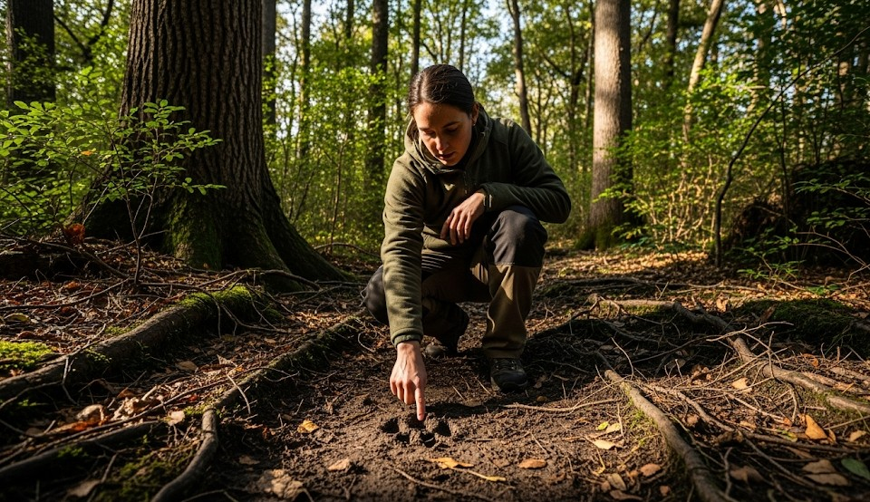

Tracking Animals for Food & Safety
Objective
Read ground and sign to locate game trails for food procurement and to avoid surprise encounters. Use tracking to plan safer routes and find water.
Scenario (Example)
Example: Mixed pine and scrub. You need water and protein. Fresh sign suggests deer and small game moving to a creek at dawn.
Step-by-Step: Reading Sign
- Gait & Direction: Identify hoof/paw and stride. Look for toe orientation and stride length to confirm direction and speed.
- Age of Track: Crisp edges = fresh; wind-sanded = old. Press beside the track—if your edges match hardness, age is similar.
- Associated Sign: Scat, browse lines, hair on wire, overturned stones, game trails contouring to saddles and water.
- Track Trap: Check soft ground, mud, and sand bars at dawn for freshest prints.
- Follow with Discipline: Move slow in shade, stop often, and scan ahead; don’t stare at your feet.
For Food
- Set snares where trails neck down (legalities vary); mask scent and use gloves.
- For small game, look for feeding sign near edges of clearings.
Safety
- Large predators leave wide, heavy prints; note heel depth and stride. Give space and avoid dense cover.
Real Example
Following fresh raccoon tracks to a creek crossing revealed a reliable water spot and crayfish under flat rocks, solving two problems at once.
Checklist
- Notebook/marker for sketches
- Tape measure or pace marks
- Gloves for snares
- Binoculars
Contingencies
- Rain erases sign → shift to trails and bedding terrain.
- Predator sign fresh → reroute upslope, increase spacing, make noise.
After-Action
Log which substrates held tracks best and how long edges stayed crisp in your climate.
← Previous | All Articles | Next →